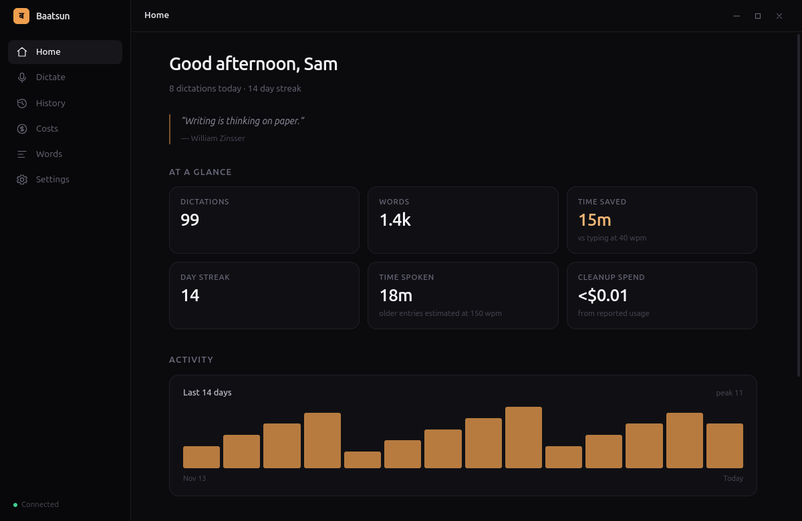

Offline transcription
whisper small.en, int8, on your CPU. It's the smallest model that gets every word right and punctuates properly. No account and no subscription.
बात + सुन · “talk” + “listen”
Baatsun is push-to-talk voice dictation for Linux. Hold Ctrl + Super in any app, say what you mean, and release. Your speech is transcribed on your own CPU and pasted into whatever window has focus.
There's nothing to click and no shortcut to register. The hotkey works the same on any desktop, on X11 or Wayland.
Baatsun reads the keyboard below the compositor, so Ctrl+Super works in every window, including fullscreen ones. You can also use toggle mode, or tap-or-hold.
A small always-on-top pill opens to show live level bars. It never takes focus, so the window you're typing into stays the one you're in.
faster-whisper transcribes locally in about 1.6 s, and the text is pasted where your cursor is. Your clipboard is restored afterwards.
whisper small.en, int8, on your CPU. It's the smallest model that gets every word right and punctuates properly. No account and no subscription.
Text goes in through the clipboard or ydotool at the kernel level, so it lands in terminals, browsers, editors and chat apps alike. Terminals get Ctrl+Shift+V.
An optional OpenAI cleanup pass fixes punctuation, fillers and spoken self-corrections (“3, no, 4” → “4”). It keeps your wording, and it is never applied to terminals or code editors.
In Gmail, a greeting goes on its own line. In WhatsApp, it stays one line because Enter sends. Long posts become short paragraphs. Cleanup never adds words you didn't say.
Add the names, products and jargon you use. Whisper is biased toward them, and so is the cloud backend if you turn it on.
English uses the fast English-only model. English + Hinglish switches to the multilingual model, so Hindi and Urdu words are recognised instead of guessed.
With the optional ElevenLabs backend, audio is sent in slices cut at pauses while you talk, so a ten-minute brainstorm finishes almost as soon as you let go.
Home shows dictations, words, time saved and your streak. Costs shows exactly what OpenAI and ElevenLabs billed, if you use them. The local engine is free.
A searchable history grouped by day, with the text from before cleanup kept alongside. There's also a tray icon, a GNOME Shell pill and a full settings page.
An Electron + React window that talks to the background daemon over a local socket.

That's the default, and you don't have to set anything up. Nothing leaves this computer unless you turn on one of the two opt-ins, and each one says what it sends.
Audio is captured with PipeWire, transcribed by faster-whisper on your CPU, then discarded. History is stored 0600 in ~/.local/share/baatsun, and you can clear it.
Sends the transcript text, never the audio, and only for windows classified as prose. If the call fails, your raw transcript is typed instead.
Sends the audio itself. It's more accurate and frees about 690 MB of RAM, but it is the only setting that takes your voice off this machine.
Reading raw evdev means the daemon sees all keyboard input, not just the hotkey. It only acts on Ctrl/Super state and logs nothing else, but this is keylogger-capable code. That's why the source is open: read src/baatsun.py before you trust it.
On Ubuntu or Debian (amd64), run this as yourself, not with sudo. It asks for your password only when it installs the package.
curl -fsSL https://raw.githubusercontent.com/umarbashirr/baatsun/main/install.sh | bash.deb from Releases, checks its SHA-256, installs it with apt, and starts the service.input group membership takes effect..deb. Other machines can build from sourcewlr-layer-shell… | bash -s -- --version v0.11.0… | bash -s -- --uninstall (keeps your settings)Baatsun is MIT licensed and built in the open. Bug reports, distro packaging, new transcription backends and docs fixes are all welcome.